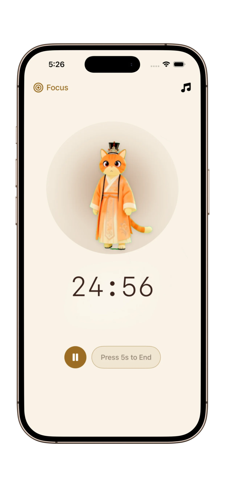

Best Focus App for ADHD (2026): Managing Time Without the Anxiety
For the ADHD brain, traditional productivity apps can feel like a chore. Here is why minimalist design is your secret weapon against "Focus Paralysis."
The ADHD Focus Paradox
If you have ADHD, you know the struggle: you have the energy, but your executive function makes it impossible to decide where to start. This often leads to "waiting mode" or time blindness—where 5 minutes feels like an hour, and 4 hours disappear in a blink.
Did you know? ADHD brains often seek high stimulation, but high-stim productivity apps with too many buttons actually increase "Cognitive Load," causing us to shut down.
What Makes an App ADHD-Friendly?
- Zero Friction: The fewer taps to start a timer, the better.
- Calm Visuals: No flashing colors or aggressive alarms that trigger sensory overload.
- Gentle Accountability: A sense of presence (like a digital "Body Double") to keep you on task.

Why PurrrrrFocus is the Top Choice for ADHD in 2026
Most focus apps treat you like a machine. PurrrrrFocus treats you like a human. Its unique oriental ink style and silent cat companion provide a "Zen" workspace that lowers baseline anxiety.
Key Features for ADHD Brains:
- Cat Companion: Acts as a gentle "Body Double," providing a sense of companionship without the distraction of a real person.
- Flexible Timers: Move beyond the rigid 25-minute Pomodoro. If your focus kicks in, keep going; if it's a "bad brain day," start with just 5 minutes.
- Distraction-Free Mode: A clean interface that hides everything except the progress of your current session.
Stop the Overwhelm Today
Join thousands of neurodivergent users who found their flow with PurrrrrFocus. Simple, calm, and effective.
Try PurrrrrFocus for ADHD Free3 Tips to Beat Time Blindness
1. The 5-Minute Rule: Tell yourself you will only focus for 5 minutes. PurrrrrFocus makes it easy to set these micro-goals.
2. Visual Cues: Keep the app open on your desk. The slow breathing of the cat companion helps regulate your own internal rhythm.
3. Reward the Effort: After a session, spend a moment enjoying the rewards you've earned in the app. Positive reinforcement is key to dopamine-seeking brains.